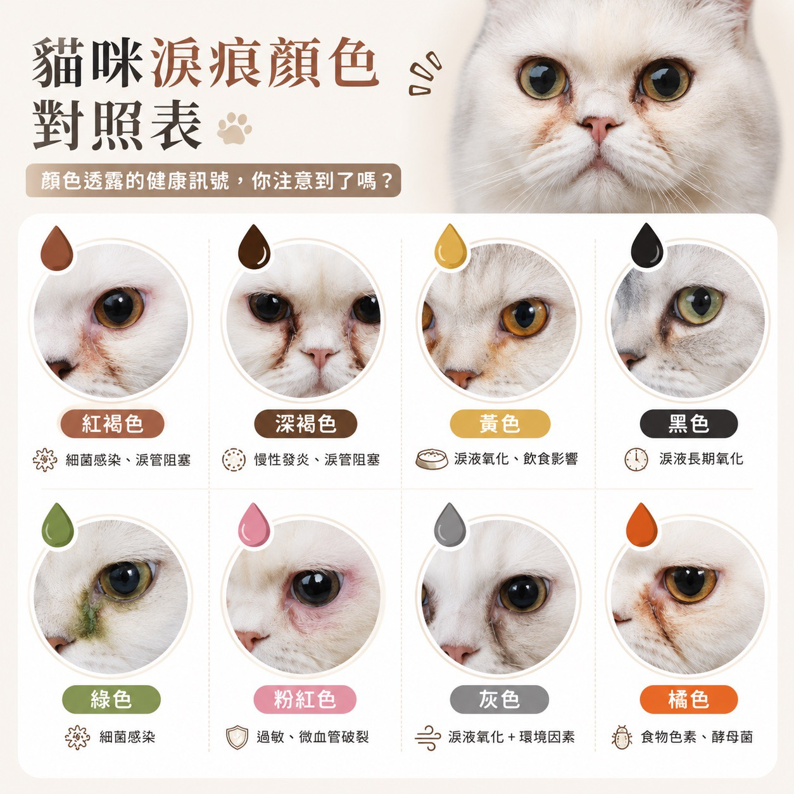
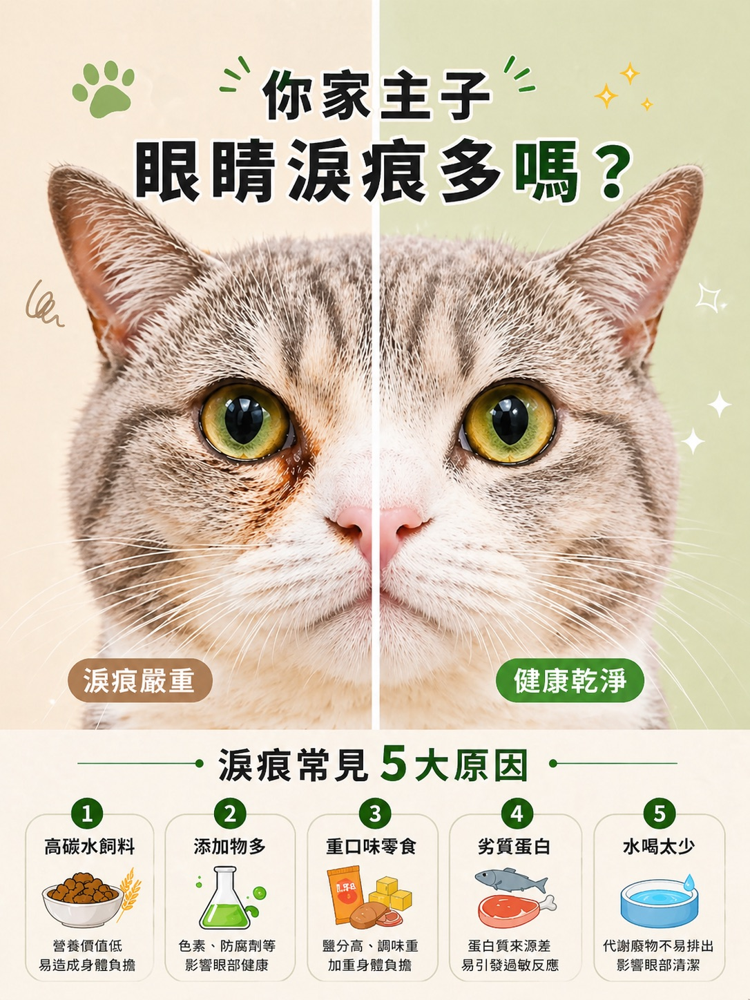

淚痕觀察表八色對照 × 紅燈訊號
EYE CHECK
淚痕不是髒
淚痕不是髒
是身體在跟你說話
拿衛生紙輕輕擦一下眼角，看顏色 ~ 30 秒就知道要不要處理
八色對照三階判讀就醫紅燈
01
淚痕是怎麼來的
先搞懂原理，後面的顏色才看得懂
眼淚裡有一種叫「卟啉」的色素，正常情況下會隨著淚液排掉。
但如果淚液分泌太多、或排不出去，卟啉停留在毛上接觸空氣氧化，就會慢慢變成紅褐色的痕跡 ~ 這就是淚痕。
所以淚痕的顏色，其實在告訴你「氧化多久了」和「有沒有其他狀況」。
02
先做三階判讀
擦一下眼角，對照這三種就好
透明
正常
正常
正常的淚液分泌
剛睡醒、打哈欠後最常見 ~ 眼睛本來就會分泌淚液保持濕潤
✓ 持續觀察就好
淺咖啡
常見
常見
淚液氧化 ＋ 毛髮染色
淺色毛的貓、扁臉貓特別明顯 ~ 不是髒，是氧化後染在毛上
✓ 加強日常清潔與保持乾爽
黃／黃綠
需注意
需注意
可能有發炎或感染
特別是只有單邊眼睛一直流、或分泌物顏色明顯不一樣
! 不要自己處理，先給醫生看
03
八種顏色對照表
顏色不一樣，代表的事情差很多

紅褐色細菌感染、淚管阻塞
深褐色慢性發炎、淚管阻塞
黃色淚液氧化、飲食影響
黑色淚液長期氧化
綠色細菌感染
粉紅色過敏、微血管破裂
灰色淚液氧化 ＋ 環境因素
橘色食物色素、酵母菌
04
常見的五個原因
很多時候問題不在眼睛，在碗裡

除了飲食，品種也很關鍵 ~ 扁臉貓（波斯、異國短毛、加菲）因為臉部結構的關係，淚管本來就比較容易受壓迫，淚痕會比其他貓明顯，這是結構問題不是照顧不好，不用太自責。
05
日常可以做的四件事
每天花不到一分鐘
1
每天擦一次用乾淨的濕紙巾或棉片，由內眼角往外輕輕擦 ~ 一天一次就夠，不要用力搓
2
擦完保持乾爽濕的地方細菌容易滋生 ~ 擦完再用乾紙巾按乾，比擦得多重要
3
飲食清淡均衡減少重口味零食與過多添加物，定時定量 ~ 換飼料要慢慢換，給腸胃時間適應
4
想辦法讓他多喝水流動水盆、濕食、多放幾個水碗 ~ 水分夠，代謝廢物才排得出去
要有心理準備：淚痕是慢慢累積的，也只能慢慢改善。已經染在毛上的顏色不會馬上退，要等新毛長出來 ~ 通常要看好幾週。不要因為兩三天沒變化就一直換方法。
06
這些情況先去看醫生
別再自己處理了
!
分泌物是黃色或黃綠色
這通常代表有發炎或感染，擦再多都沒用
!
只有單邊眼睛一直流淚
單側特別要注意 ~ 可能是異物、倒睫或淚管阻塞
!
眼睛紅腫、瞇眼、一直眨
他在告訴你不舒服
!
一直去抓眼睛、蹭臉
抓下去可能傷到角膜，先戴頭套再去醫院
!
本來沒有，突然變很嚴重
短時間內明顯變化，比長期都有更需要檢查
NEXT
😽扁臉貓照顧指南淚痕特別明顯的品種要怎麼顧›
💧每日喝水量計算先算出他一天該喝多少›
💩便便觀察表另一個每天看得到的健康訊號›
💬拍下來問香菇爸不確定是哪一種顏色 ~ 拍照傳給我看看↗
還可以看這些
關於這份對照表
這是一份幫助你「觀察」與「描述」的工具，不能取代獸醫診斷
顏色對照為常見情況的整理，實際原因需由獸醫師檢查判定 ~ 同樣的顏色也可能有不同成因
主子眼睛有任何異常，請務必先就醫，這頁只是幫你把看到的東西講清楚
© 2026 香菇爸・原創內容